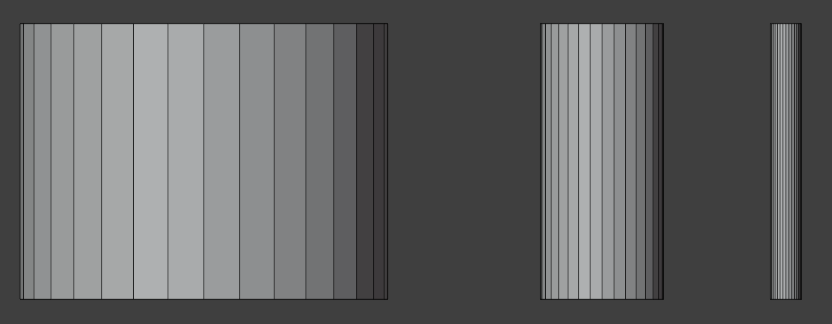
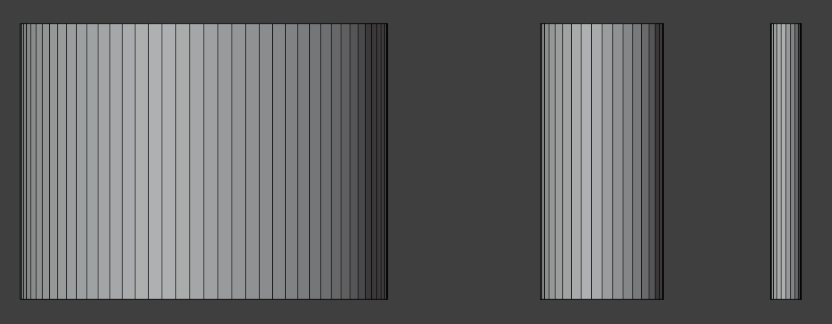
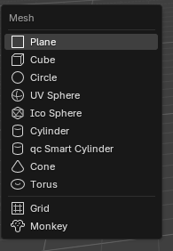
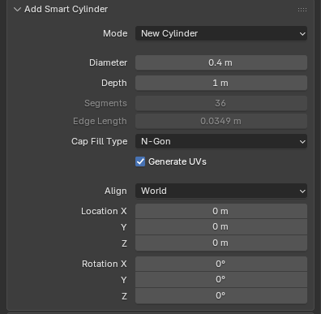
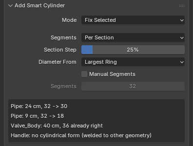
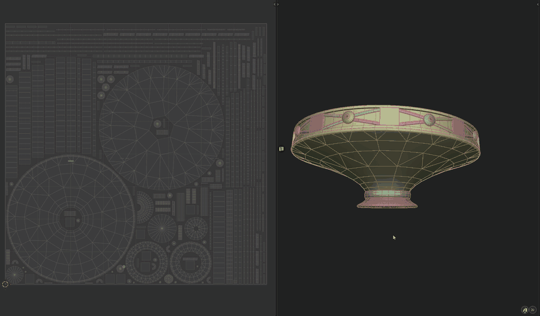
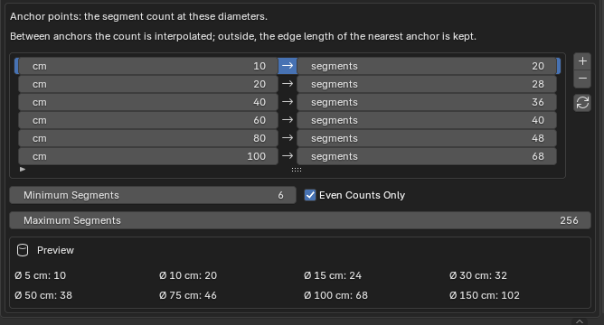

QC Smart Cylinder¶
A cylinder whose segment count is not guessed but computed from its diameter by the studio's low-poly rule. The same tool also rebuilds cylindrical forms that already exist — yours and other people's.
How to install it is on its own page: Installation.
Why it exists¶
The built-in Cylinder always gives 32 segments, whatever the diameter. On a bolt that is four times more than needed; on a barrel, half of what it wants. Put three cylinders side by side and the wireframe says it at once:

The same three after the add-on rebuilt them — 82, 36 and 20 segments:

The idea behind the rule is to keep the edge length roughly constant whatever the size of the part. Then the mesh density across a scene looks even, and the silhouette breaks neither on the small parts nor on the big ones.
Where it lives¶
One item in the Shift+A → Mesh menu, directly under the ordinary Cylinder.

The add-on has no panel of its own: everything it lets you set lives in the Adjust Last Operation box — the one that opens in the bottom-left corner of the viewport after an action, or with F9.
A new cylinder¶
Call the menu item with nothing selected and a cylinder appears at the 3D cursor.

The field to work with is Diameter: drag it and Segments recomputes as you go. Segments and Edge Length cannot be edited — they are the rule's answer, not a setting.
The diameter is a diameter, not a radius, as in the studio table. Type any unit
you like: enter 40 cm and Blender converts it. The scene scale is honoured.
In the recording the cylinders are built one after another: the diameter changes, the segment count follows, and the finished part has one mesh density throughout.
The edge length is not decoration
It tells you whether the rule is working or you have wandered off the end of the table. At any sensible diameter it stays between roughly 1.5 and 5 cm. If it jumps, look at the diameter: the scene units are probably not what you think they are.
Rebuilding what is already there¶
Select a mesh and call the same menu item — the add-on works out that you do not mean a new cylinder, and rebuilds the selection instead.

The heart of it is Per Section. A part of changing diameter does not get one count along its whole length: the add-on splits it into sections where the diameter changes, gives each the count its own diameter calls for, and stitches neighbouring sections together with triangle bridges. A lathed part, a pipe with a reduction, a rod with a thicker end — all handled in one call.

The UV editor is open on the left of the recording. The part is rebuilt whole — and the unwrap is still there: the same islands, the seams where they were.
What survives the rebuild:
- the unwrap — UVs are carried over to the new mesh, elbows and caps included;
- anything that is not a form — the part of the mesh the add-on did not recognise is left alone;
- edit mode — Fix Selected works in Edit Mode too, and a partial vertex selection limits the repair to the forms it touches.
The report¶
After a rebuild the box shows one line per form it found.
Worth reading always, not only when something went wrong:
| Line | What it means |
|---|---|
40 cm, 36 → 82 |
The diameter, the count before and after |
36 already right |
The form was correct and was left alone |
no cylindrical form |
The add-on recognised nothing — and broke nothing |
capped: check the object scale |
The segment ceiling was hit. Almost always that means a wrong object scale, not a huge part |
The rule lives in the preferences¶
The table itself is in Edit → Preferences… → Add-ons → QC Smart Cylinder.

The rows are anchor points, not ranges: between them the count is interpolated, so there are more steps than rows. Outside the table the edge length of the nearest anchor is kept.
The studio values: 10 cm → 20, 20 → 28, 40 → 36, 60 → 40, 80 → 48, 100 → 68. The arrow button always brings them back.
Below the table are the limits: Minimum Segments (6), Maximum Segments (256) and even rounding. The ceiling is not there to save polygons: a form that hits it is almost always sitting in the scene at the wrong scale.
The table is shared by every scene
It lives in Blender's preferences, not in the scene file. Tailor it to one project and the next project on the same machine sees the same numbers.
What it does not do¶
The limits are known and deliberate — in these cases the add-on skips the form and says so in the report, rather than guessing at the geometry:
- a form welded to the rest of the geometry;
- a mesh with shape keys;
- a closed ring of sections — a torus made of pieces of differing thickness, say;
- a four-sided cylinder: it cannot be told apart from a cube. If one really does need rebuilding, set the count with Manual Segments.
Next¶
The settings reference.